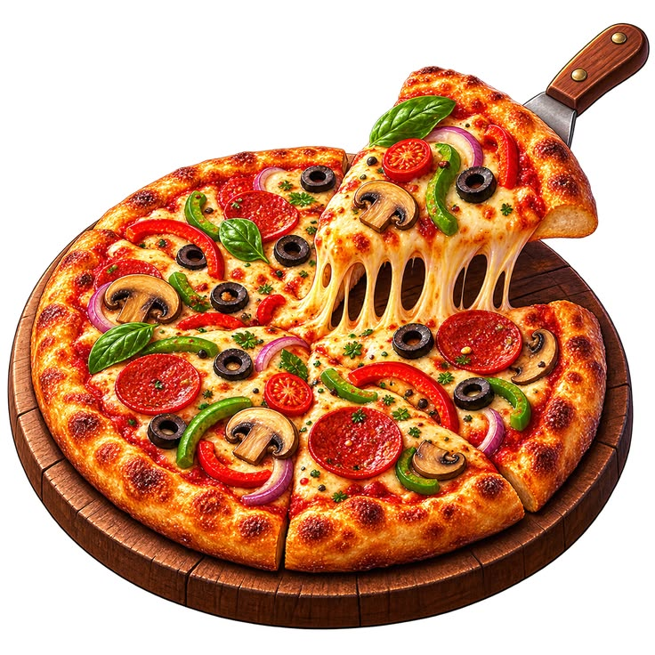
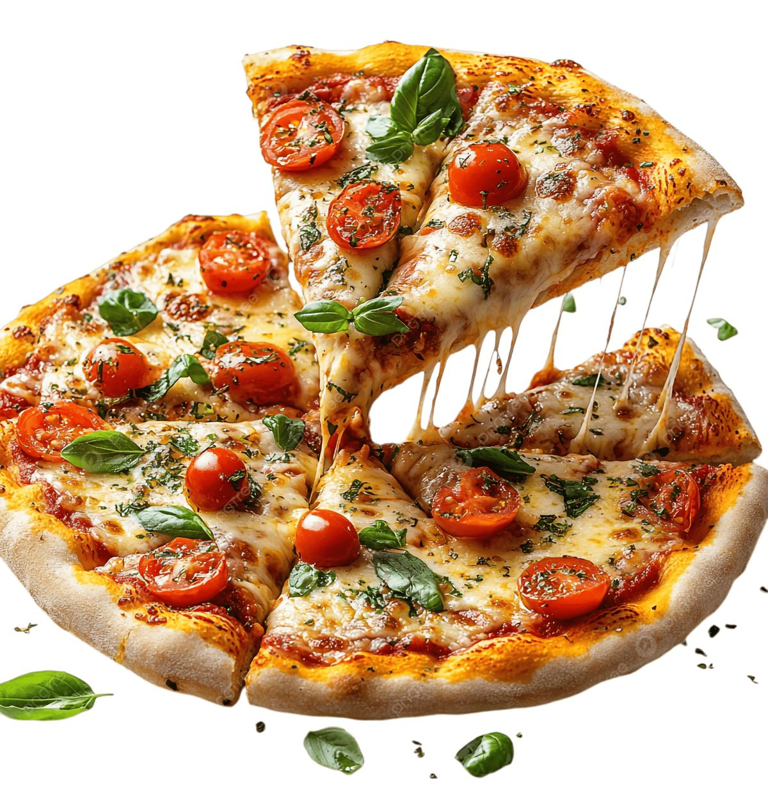

PIZZA


🍕 Ingredients for Pizza
- For the pizza base
- Pizza base (ready-made) — 1
- OR pizza dough made with flour, yeast, water, salt, and oil
- For the pizza sauce
- Pizza sauce — 2–3 tablespoons
- OR tomato ketchup — 2 tablespoons
- For toppings
- Onion — 1 small
- Capsicum — 1 small
- Tomato — 1 small
- Sweet corn — 2 tablespoons
- Olives or mushrooms — optional
- For cheese and seasoning
- Mozzarella cheese — ½ to 1 cup, grated
- Oregano — ½ teaspoon
- Chilli flakes — ½ teaspoon
- Salt — a little, if needed
BRIEF DESCRIPTION OF THE DISH
This is a Vegetable Pizza 🍕
It is a delicious pizza made with a crispy base, tangy tomato sauce , melted mozzarella cheese, and fresh vegetables like onion ,capsicum ,tomato , and sweet corn. It is topped with oregano and chilli flakes to add extra flavour. It is cheesy, colourful, and perfect for a tasty snack or meal.